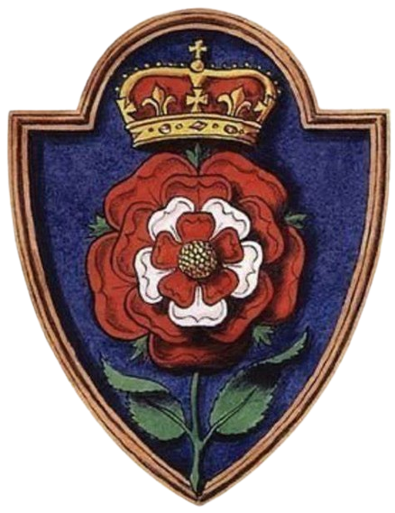

Enrique Vll
Si bien la vida de alcoba de Enrique VIII fue fascinante y merece ser contada y conocida,
no menos cierto es que poca incidencia histórica tuvo en su reinado, con la decisiva excepción de la triste historia de Ana Bolena:
la amante y luego segundo esposa de Enrique VIII fue uno de los detonantes del cisma anglicano.
Desligado de Roma, el rey pasó a ser cabeza de la Iglesia de Inglaterra, disolvió las órdenes religiosas e incautó sus bienes.

VII de Inglaterra
Segundo hijo de Enrique VII de Inglaterra, el futuro Enrique VIII tenía nueve años cuando asistió como infante a los desposorios de su hermano mayor Arturo,
príncipe de Gales, con Catalina de Aragón, hija menor de los Reyes Católicos. Arturo era el primogénito y en consecuencia el heredero del trono de Enrique VII,
quien con esta unión pretendía consolidar su alianza con España y asegurar una prolífica descendencia a su linaje.
Todo parecía ir viento en popa para los Tudor cuando, cinco meses después, siendo aún recientes los jubilosos ecos de la boda,
el príncipe Arturo moría víctima de una gripe aguda ante la que los médicos de la época se mostraron impotentes. Súbitamente, todo pareció venirse abajo.
La salud del rey Enrique VII era notoriamente mala y su único hijo superviviente, el futuro Enrique VIII,
no había alcanzado aún la mayoría de edad. Inmediatamente fue declarado sucesor en previsión de cualquier contingencia.
En 1509 falleció Enrique VII, y Enrique VIII ocupó el trono destinado a su difunto hermano.
Enrique VIII tenía entonces diecisiete años y era un apuesto mozo a quien no faltaba entendimiento ni habilidad política. Tras ceñir la corona en sustitución de su hermano,
consideró que por razones de Estado era preciso reemplazarle también como esposo. Desprenderse de Catalina de Aragón y
devolverla a su país suponía perder la cuantiosa dote aportada por sus padres y, lo que era aún más importante, cortar un lazo de inestimable valor con la corona española,
más necesario que nunca en el revuelto contexto político europeo de aquel entonces.
